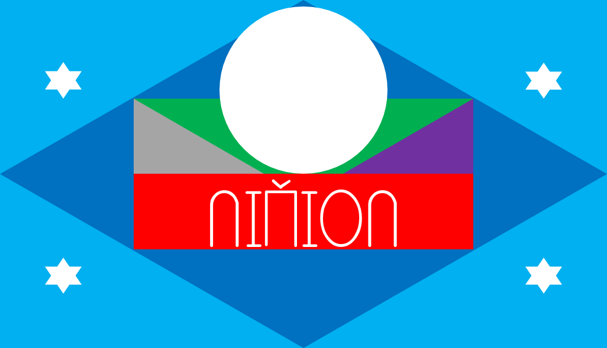
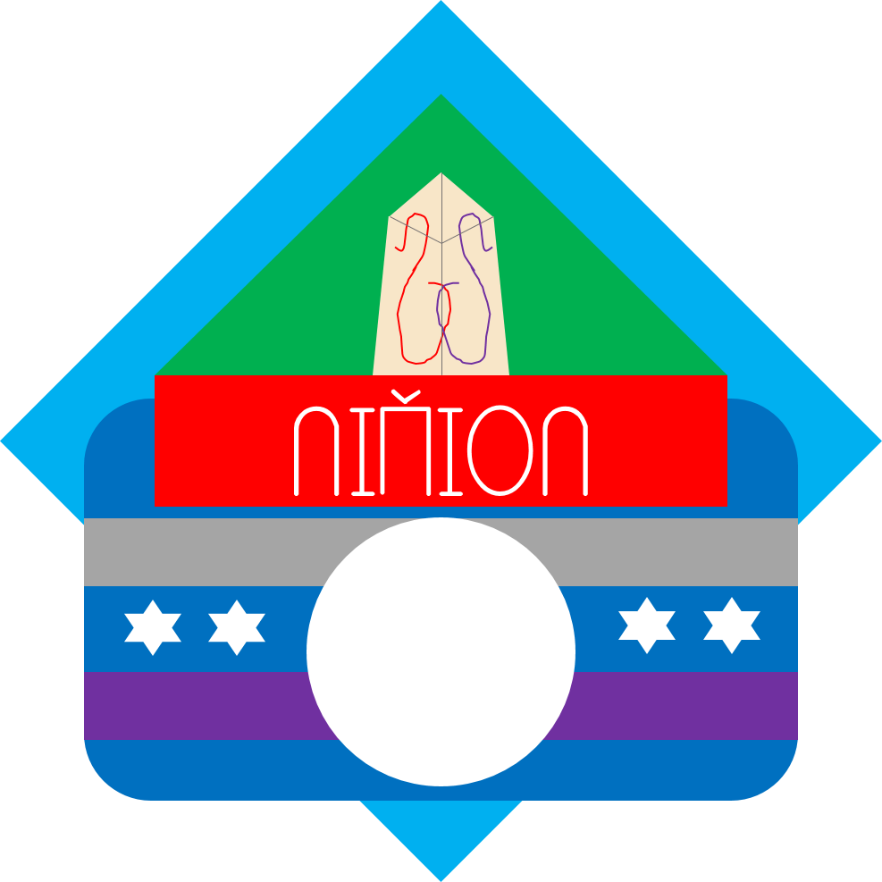

| 首页 | 音系 | 正字法 | 语法 | 例文 | 立准国 | Nivoni |
立准国（Nivion Sas）是虚拟的曰星球北大陆的主权国家，是曰星球领土面积最大、综合国力最强的国家之一。主体民族为立准族，官方语言为立准语，首都为立柘市（Nivia）。
其国家元首为守护者（oinuias）或守护神（oinuias uwikot），是国家的象征。现任国家元首为已故永世守护神・・臤徘斯・加丘三（Kinboise Gakiosan oinuias uwikote heriars）。
国家最高权力机关为立准国国会（Sascavrie i'Nivion），国会首席会长为立准国的最高领导人。现任国会首席会长为不难移・本・覃会昇・九金煞乌蒙（Bynan'i Ben Tšinhweicenn Kinboise）。
国家标志
立准国国旗和国徽如右图。
立准国国旗和国徽的含义是一致的。 浅蓝色象征天空，深蓝色象征海洋，绿色象征大地，红色和NIVION（立准国）字样象征立准国。灰色象征生活富足，紫色象征和平稳定。白色圆形和六角星分别象征太阳和星星。国徽上还有建都纪念碑，该碑是立准国国家主权的象征。
立准国国歌是《立准之歌》（Nivion o'eane）。其歌词取自立准国诗人根据国旗、国徽创作的《立准国国旗国徽记》（Eane i'Nivion o'lasmie re o'tencyr）。作曲者是。
近来，立准国计划更换国歌，国会向全国征集作品，但目前还没有作品被选中。
Eane i'Nivion o'lasmie re o'tencyr |
立准国国旗国徽记 |
|---|---|
Pu karnial ši go honfen, Pu atrikod ši go otler, Pu nitif ši go rulnhe, Hu go rulnhe do o'saskat šim. Hesetam šu kromnom o'unie, Deemr re ceomr šu wespica, Svinik šu boa hu moncea, Feri šu toz hu lewcea. |
无边的是天空， 广阔的是海洋， 平坦的是大地， 在大地上有我们的国家。 人民生活富足， 社会和平稳定。 白天的太阳明亮， 夜晚的星星很多。 |


返回顶部 返回主页